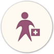

Cambridge diet
- první výsledky se dostavují již po sedmi dnech užívání
- po celou dobu programu jste pod vedením odborníka
- ideální kúra pro detoxikaci celého těla, vaše pleť bude zdravější a čistší
- nastartujete metabolismus, zlepšíte si své zdraví, získáte více energie
- každý den tělu dodáte 100 % DDD minerálů, vitamínů a stopových prvků
Jak to funguje
Tvoří most mezi špatnými stravovacími návyky a zdravým životním stylem. Cambridge dieta je plně hodnotná náhrada stravy, která dodá tělu 100 % doporučené denní dávky vitaminů, minerálů a stopových prvků, je to nízko-sacharidový výživový program.
Zajistí Vám úpravu metabolismu a úbytek pouze podkožního tuku a vnitřního tuku, který je rizikový. Dietu vyvinul tým specialistů pod vedením doktora A. Howarda z University of Cambridge.

polévky, koktejly, ovesné kaše, rýžový pudink, tyčinky, boloňské špagety, kuřecí tikka, sýrové makarony, ovocná smoothie, ovocné nápoje, slané nápoje...
Plány hubnutí
Prvním krokem je konzultace s certifikovaným poradcem, který vás po celou dobu programu povede. Druhým krokem je proces hubnutí, kdy můžete užívat produkty Cambridge Weight Plan jako jediný zdroj výživy a dbáte na pitný režim. Třetím krokem je stabilizace, ve které postupně projdete několika kroky s přechodem na pestrou stravu. Zároveň se stanoví optimální denní příjem kalorií, který vám zaručí dlouhodobé udržení získané váhy. Čtvrtým krokem, a tím nejdůležitějším, je udržení získané váhy. V tomto stadiu je podstatné nevrátit se ke starým stravovacím návykům, omezit tuky a cukry, dopřát si dostatek zeleniny, vlákniny a samozřejmě pohybu.
V průběhu a po ukončení Cambridge Weight Plan programu si osvojíte principy zdravého životního stylu. Cambridge diet je vhodná pro jakýkoliv způsob hubnutí:
dieta pro rychlé hubnutí, jako jediný zdroj výživy
- 
dieta pro nemocné s potížemi při příjmu pevné stravy

dieta pro pozvolné hubnutí, jako náhrada 1–2 jídel
dieta pro každého, kdo má nedostatek času

dieta pro udržení ideální váhy, jako občasná náhrada jídla
Poradenství
Navštivte mě v Centru zdraví a využijte nezávazné konzultace s odbornou nutriční poradkyní.
Mám již s Cambridge výživovým programem 9 let zkušeností a poradenství v oblasti výživy již dělám 23 let s vynikajícími výsledky.
Zaručuji Vám individuální přístup, stálou podporu a motivaci, odborný dozor a široký sortiment produktů.
ObjednatPříběhy s Cambridge diet

Lucie Semotamová
Váha před: 125 kg
Váha po: 73 kg
Jako každá žena už od dětství řeším, jak vypadám. Řešila jsem to kvůli klukům, ale smozřejmě i kvůli sobě. Už v dětství jsem měla menší problém co se svou postavou, ale až do puberty mi to tolik vrásek nepřidělávalo…
Celý příběh >Lucie Semotamová
Jako každá žena už od dětství řeším, jak vypadám. Řešila jsem to kvůli klukům, ale smozřejmě i kvůli sobě. Už v dětství jsem měla menší problém co se svou postavou, ale až do puberty mi to tolik vrásek nepřidělávalo. Nebyla jsem jedlík, a tak jsem ani kila neřešila. Ty začaly přibývat až po nástupu na střední školu, kdy na jedné straně začal přibývat stres a na straně druhé začal rapidně ubívat čas. Nestíhala jsem se ani pořádně najíst a ve volných chvílích jsem do sebe hodila vše, co mi přišlo pod ruku. Stávalo se, že první jídlo jsem měla až někdy k večeru, ale za to jsem si to vynahradila se vším všudy.
Tak začala moje váha pomalu narůstat. Dostala jsem se na hranici devadesáti kilo a začala jsem to řešit dietami. Jenomže - kilo šlo dolu a dvě nahoru. Po střední škole jsem se zklidnila a dostala se s váhou na osmdesát kilo. Stále jsem se ale musela řešit, protže se rozhodně nedá říct, že bych byla se sebou spokojená. Další zvrat nastal s nástupem do práce. Následkem pracovního úrazu jsem prodělala operaci kolene, avšak prognóza ani po ní nebyla dobrá - čekala mě další operace a nasazení kortikoidů. Po těch jsem v krátké době nabrala přes dvacet kilo a Za takovou proměnu si hlavní cenu v soutěži Silute 2015 rozhodně zasloužilapopraskala mi kůže. Pohled do zrcadla za moc nestál, byla jsem celá opuchlá. Problémy ale neustávaly. Během deseti let jsem podstoupila celkem sedm operací v plné narkóze a ani ta sedmá nebyla poslední. S kolenem mám problémy i nadále - bolesti, otoky, nestabilita. A pokaždé operaci jsem znovu a více přibírala. Nakonec jsem se dostala až na váhu 125kg.
Už sem nevěděla jak dál. Na podzim loňského roku jsem jela navštívit kamaráda. Nebyl ještě doma a otevřela mi jeho sestra, se kterou jsme se dobře znaly. I ona měla dlouhodobě problémy s nadváhou a tak jsem byla v šoku když jsem uviděla jak vypadá. Neviděly jsme se sotva pár měsíců a byla skoro poloviční. Řekla mi, že je na Cambridge dietě. Samozřejmě sem chtěla vědět co to je, jak to funguje a vůbec všechno. Sedly jsme si na kávu, ona mi vše vysvětlila a dala mi kontakt na pobočku Cambridge v Brně – Slatině na paní Poláčkovou. Samozřejmě jsem nejdřív nevěřila, že by mi to mohlo pomoci. Už dříve jsem zkusila oddělenou stravu, krabičky a podobně, a tak jsem si řekla, že toto bude můj poslední pokus a dnes už vím, že to bylo správné rozhodnutí.
Po telefonu jsem se objednala a se strachem a nedůvěrou šla do poradny. Bála jsem se, co mě tam čeká. Všchichi doktoři, se kterými jsem se během let setkala, na mě doslova křičeli, že jsem tlustá a že mám shodit – jakkoliv, ale hlavně rychle. Po první návštěvě můj strach opadl. Paní poradkyně byla velmi milá, a podrobně vysvětlila co mě čeká a jak budeme postupovat. Byla to příjemná změna. Pustila jsme se do hubnutí! Ze začátku pro mě bylo těžké jíst pravidelně a jen to, co jsem měla, ale rychle jsem si zvykla. Týden po týdnu jsem cítila pomalou změnu, které si nejprve nikdo nevšiml, protože jsem chodila dost nabalená. Až s koncem jara si i moje okolí začalo všímat změny. Začátkem léta jsem měla dole neuvěřitelných 52kg a toho už si všimli všichni. Jsem moc sťastná že jsem sebrala odvahu a zkusila Cambridge dietu, už jsem ani nedoufala že se mi někdy podaří zhubnout, natož na váhu kterou mám dnes. Všechny moje zdravotní problémy se sice nevyřešily, koleno ale určitě oceňuje že nese podstatně nižší váhu. No a snad se i tyto problémy čase vyřeší.
X